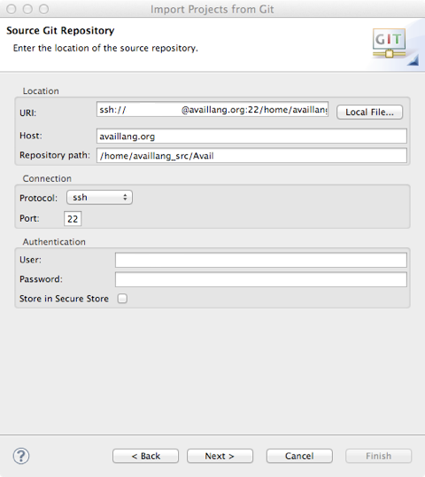

Step 4: Connect to the Avail Source Repository
In this process you will connect to Avail's Git source repository at AvailLang.org using your supplied credentials and download a copy of the code to your local machine.
Connect Git to the Avail repository
- From the File menu, choose Import….
- Open the Git folder and choose Projects from Git; hit Next.
- Select URI; hit Next.

- IGNORE the URI field (it auto-populates from the Host and Repository path fields). Enter the following information exactly (it is case-sensitive):
| Host | availlang.org |
| Repository path | /home/availlang_src/Avail |
| Protocol | ssh |
| Port | 22 |
| User | availlang_src |
| Password | 4\/41Lp4$$wds[#3] |
- Hit Next.
- Everything in the next (Branch Selection) window should be correct; hit Next.
- In the Local Destination window, Directory field, either type in or Browse to the workspace folder where the Avail project should be stored. Hit Next.
- Everything on the next screen is fine (with Import existing projects selected). Hit Next.
- From here on it should be Next(s) and Finish.
Git's Version Control Options
The version control menu is available by right-clicking on the Avail project and selecting the Team menu. If you are familiar with SVN, you will note this is the same procedure as with that plugin.
Selected commands from this menu:
- Commit - This is NOT the same command as SVN's commit! In addition to tracking changes made to the master, Git has local version control; commit will commit the changes you have made locally to your own version stream, and has nothing to do with the master.
- Push to Upstream - This is the command that merges your local changes to the repository with the effect that the master will be changed by your edits.
- Fetch from Upstream - Creates a new version branch locally based on the master. Does not change any files in your local working copy. Use this to keep an eye on what's happening in the master without having to resolve any conflicts or lose old versions of files that you're still looking at.
- Pull - Pulls the master data and merges it into your working version. You must manually resolve any true conflicts.
For more information on working with Git, visit http://git-scm.com/.